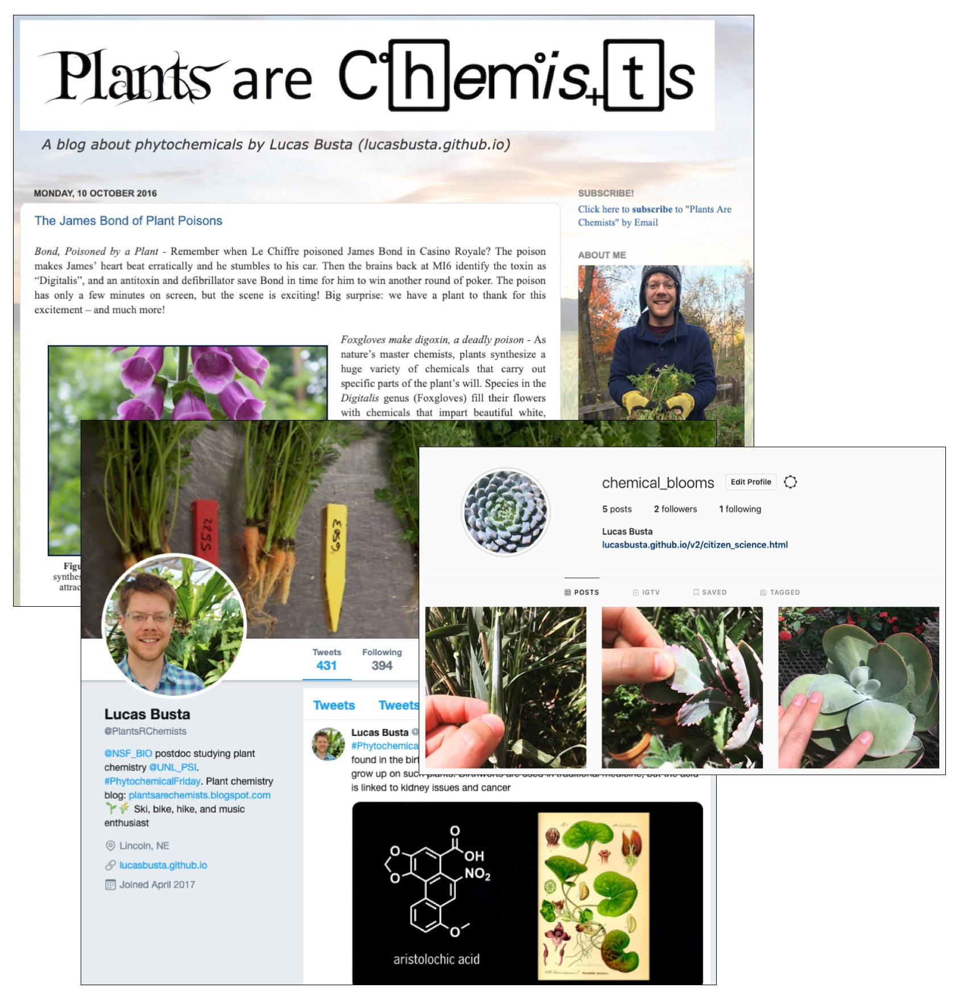

Social media networks are now nearly impossible to ignore. For better or for worse, this is true even for scientists. The good news is that social media networks offer a variety of ways to advance scientific pursuits. They are powerful tools for communicating with non-scientists about the science we are doing. They are also tools for communicating with other scientists. On top of this, social networks can also be used to coordinate scientific projects in which the public can participate - citizen science. I use twitter to communicate with other scientists about plant chemical research, blogger to log stories of plant chemicals for the lay reader, and am starting to use instagram as a database for a citizen science project called Project #ChemicalBloom.